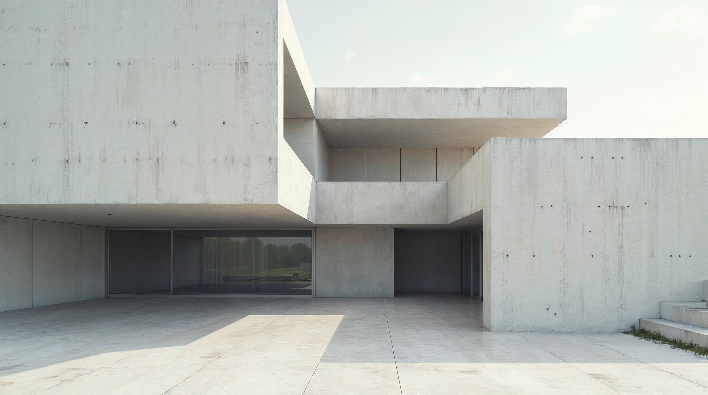
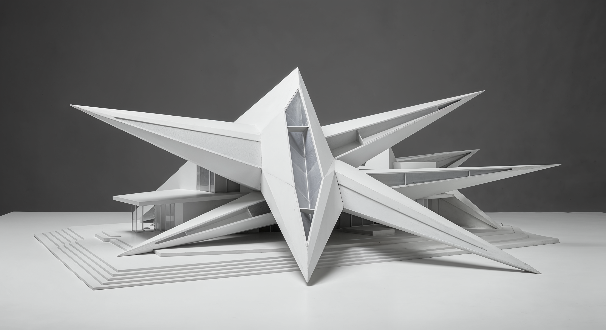
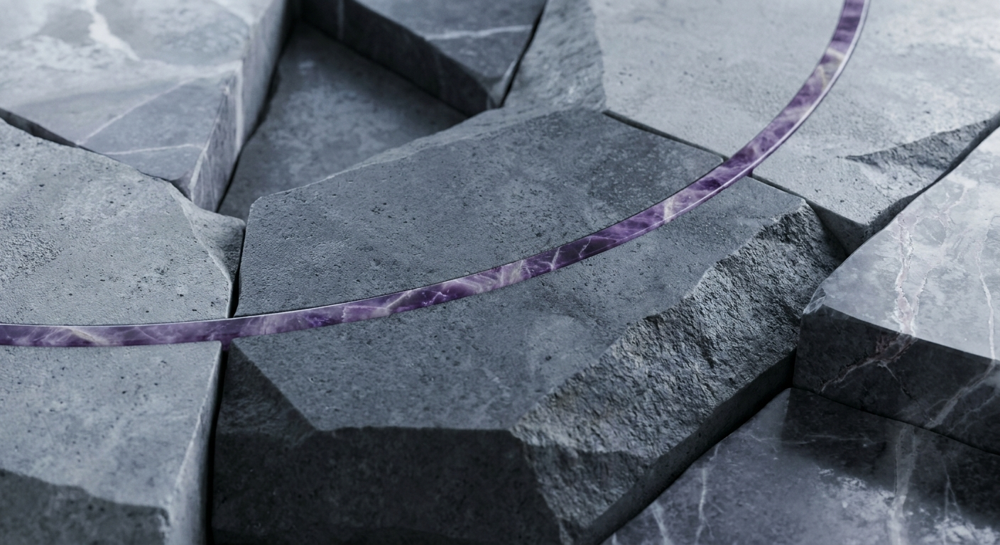

Creative Direction.
How the FP brand identity was built, step by step. From strategic foundations to visual execution.
Personality DNA.
Every brand carries a psychological signature. The FP archetype mix balances optimism with creative ambition and genuine approachability. Three archetypes, weighted to shape every decision that follows.


Brand Positioning.
Fourteen axes that calibrate the brand's personality. Each slider positions FP on a spectrum from one trait to its opposite. The dots lock in a precise coordinate, not a vague direction.
Reference Library.
Every reference image maps to a design principle. These are not decoration. They are the visual vocabulary that informs every layout, photo direction, and texture choice.







Typography.
Two typefaces. One for impact, one for information. Bricolage Grotesque carries the personality at 800 weight. Poppins handles everything else with quiet legibility at 400.
Use: Headlines, titles, logo mark, pull quotes
Use: Body text, labels, navigation, UI
Color.
One accent. Six neutrals. The purple carries all brand energy. Everything else stays quiet. No warm colors, ever. The constraint is the point.
Logo Mark.
Two letters and a period. The dot carries the accent color and becomes the brand's most recognizable element. Works at every scale, on every surface.
The Bracket System.
Three variants of the viewfinder bracket. Each has a specific use case. The bracket is the brand's visual signature, never decorative.
Design Rules.
Non-negotiable constraints. These rules exist to maintain visual coherence across every touchpoint.
Zero border-radius everywhere. No rounded corners, no soft shapes. Precision is the aesthetic.
White is the default surface. Dark sections used sparingly as accent, never as the primary mode.
Generous spacing between sections. Content breathes. Density is the enemy of clarity.
#5A5CF9 is the single accent. No warm colors, no secondary accent. One voice of color.
Reds, oranges, yellows are permanently excluded. Cool palette only. This is architectural, not decorative.
Bricolage Grotesque for display. Poppins for body. No third typeface. Mono-style labels use Poppins with letter-spacing.
Subtle noise overlay on all surfaces. Adds analog warmth to the digital precision. Barely visible, always present.
Real images, not illustrations. Slightly desaturated, high contrast. Architecture, workspace, texture, design as subjects.